The Battery Energy Storage System (BESS) sector is experiencing a fundamental economic transformation. What was once a niche technology requiring substantial government support has evolved into a commercially viable, increasingly cost-competitive solution that is reshaping how grids manage renewable energy integration. At the heart of this shift lies a single, powerful force: the dramatic collapse in battery costs across the globe and particularly in India.
The Cost Revolution: By The Numbers
The magnitude of price decline is startling. India's BESS tariff-based competitive bidding discovered storage costs of approximately Rs 10.18/kWh during 2022-23, when the technology was still heavily dependent on viability gap funding (VGF) schemes. Within just three years, the most recent tenders have revealed costs as low as Rs 2.1/kWh—a staggering 79% reduction. This represents not an incremental improvement but a structural reshaping of project economics.
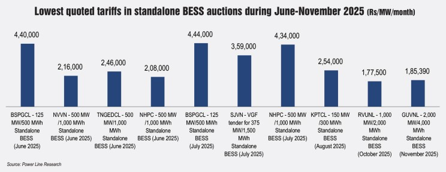
Globally, the picture mirrors this transformation. According to BloombergNEF 2025 Lithium-Ion Battery Price Survey, stationary storage battery packs—the configuration optimized for grid-scale BESS—achieved a landmark milestone: prices fell to $70/kWh, a 45% decline from 2024 and the steepest reduction across all battery use cases. Meanwhile, overall lithium-ion battery pack prices reached $108/kWh, representing an 8% drop from 2024 despite an increase in raw material costs. Remarkably, stationary storage is now the lowest-cost segment, displacing electric vehicle batteries as the price leader—a dramatic shift in the global battery hierarchy.
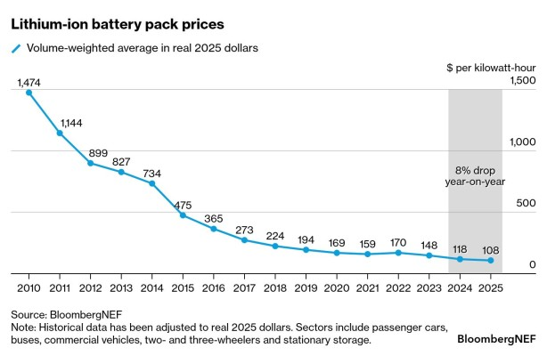
Looking ahead, analysts expect continued but moderating reductions. BloombergNEF projects a 3% decline in average battery pack prices to approximately $105/kWh in 2026, while Goldman Sachs research suggests prices could decline further toward $80/kWh by 2026, amounting to a 50% reduction from 2023 levels. This ongoing momentum, even at a slower pace than recent years, signals that the cost foundation supporting BESS deployment remains in motion.
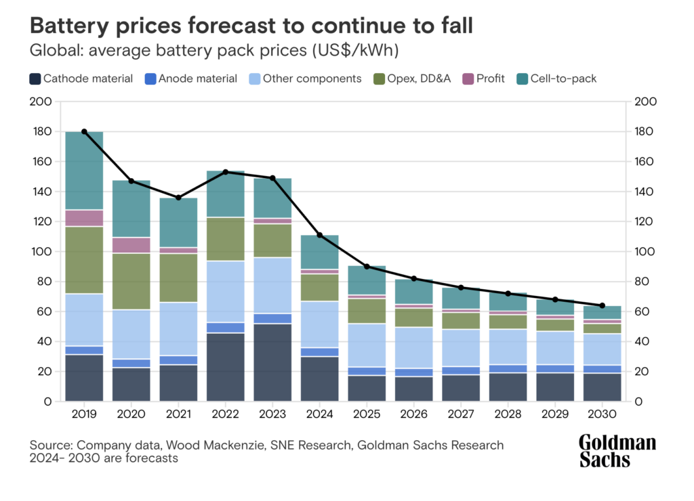
What's Driving the Cost Cascade
The decline in battery costs stems not from a single breakthrough but from the convergence of multiple structural factors that reinforce one another. Understanding these drivers reveals why further cost reductions are likely to persist and why BESS economics will continue to improve.
Manufacturing Overcapacity and Brutal Competition
The battery manufacturing sector has expanded capacity so aggressively that China alone faces a threefold oversupply relative to annual demand. This glut has triggered intense competition among manufacturers competing for market share, eroding margins and accelerating price cuts. Chinese manufacturers, which now supply approximately 80% of global lithium-ion cells, have been particularly aggressive in pricing to maintain sales volumes, particularly when redirecting exports to European markets. This dynamic—classical economic overcapacity leading to price pressure—continues to benefit buyers globally, including Indian BESS developers.
The Rise of Lithium Iron Phosphate (LFP) Chemistry
LFP technology has emerged as the dominant choice for stationary storage applications, and this shift has profound cost implications. Unlike nickel-manganese-cobalt (NMC) chemistry, which relies on expensive and supply-chain-volatile cobalt and nickel, LFP uses iron phosphate compounds derived from abundant, lower-cost raw materials. In 2025, LFP packs averaged $81/kWh compared to $128/kWh for NMC chemistry—a 37% cost advantage.
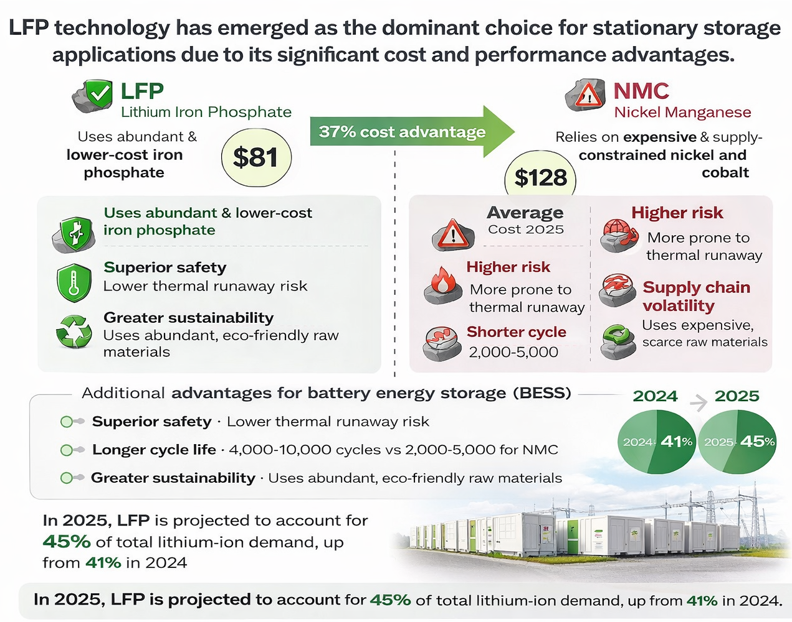
For BESS specifically, LFP's advantages extend beyond raw material costs. The chemistry offers superior safety (lower thermal runaway risk), longer cycle life (4,000-10,000 cycles versus 2,000-5,000 for NMC), and greater environmental sustainability. These qualities make LFP ideal for stationary grid-scale applications, where duration, reliability, and long-term economics matter far more than energy density. This chemistry alignment has created a virtuous cycle: as LFP's market share expands (expected to reach 45% of total lithium-ion demand in 2025, up from 41% in 2024), manufacturing scale increases, driving costs further down and accelerating adoption.
Economies of Scale in System Design
Cost reductions are not limited to battery cells alone. System integration and engineering have achieved dramatic efficiencies through standardization. Analysis from BloombergNEF's 2025 Energy Storage Systems Cost Survey reveals that BESS systems utilizing larger cells (300Ah or greater) are approximately 50% cheaper than systems with smaller cells. Similarly, container-level configurations with 4MWh capacity achieve 39% cost advantages over 2-4MWh configurations. These findings have immediate practical implications: developers are increasingly specifying larger modular components, reducing per-unit engineering, assembly, and redundancy costs.
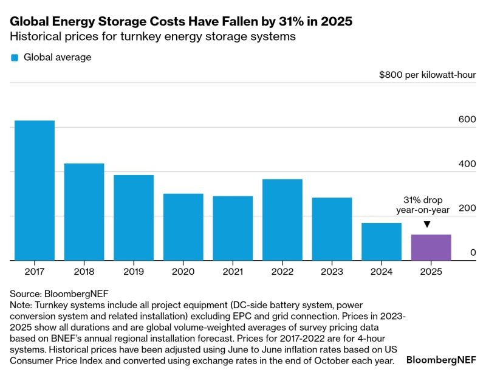
Manufacturing Process Optimization
Simplification of battery architecture has yielded significant savings. Cell-to-pack designs, which eliminate intermediate module layers and reduce assembly complexity, lower cost while improving space efficiency. Simultaneously, advances in process automation, yield improvement, and materials handling are reducing labor costs and scrap rates. As production volumes scale and competitive pressure intensifies, manufacturers invest in automation and efficiency improvements as a survival strategy, passing some of these gains downstream to system integrators and ultimately project developers.
The India Market: From Pilot to Scale
India's BESS sector exemplifies how falling costs transform market structure. The country's rapid deployment of renewable energy—with 234 GW of installed capacity as of June 2025 and targets of 500 GW by 2030—has created urgent demand for flexible, responsive storage to manage solar and wind intermittency. Simultaneously, plummeting battery costs have made BESS economically viable without relying entirely on subsidies.
The tariff discovery trend across Indian tenders in 2025 vividly illustrates the impact of scale and competitive confidence. Early auctions in June-July discovered tariffs ranging from Rs 2.16-2.45 lakh/MW/month (approximately $2,600-$2,950/MW/month). By October-November 2025, when mega-tenders for 1,000-2,000 MW were issued, tariffs had compressed to Rs 1.77-1.85 lakh/MW/month ($2,130-$2,230/MW/month)—a 26-33% reduction within a single year. This inverse relationship between project size and discovered tariffs reflects the compounding impact of lower battery costs, improved supply chain predictability, and bidder confidence in project viability.
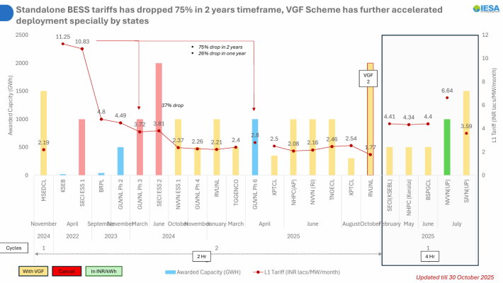
The volume of tenders and bidder participation underscores the market transformation. In 2025 alone, 50 first-time bidders emerged as winners across Indian BESS auctions, each winning at increasingly lower tariffs. A year earlier, such competitive depth would have seemed implausible. Today, the abundance of technically capable bidders—including domestic developers, global energy companies, and EPC contractors—demonstrates that BESS deployment has transitioned from an experimental, subsidy-dependent model to a mature, commercially driven sector.
Capex Breakdown: What's Actually Driving System Costs
To understand how falling battery costs translate into project-level economics, disaggregating system capex is essential. Industrial BESS projects reveal a clear hierarchy of cost drivers:
The battery pack's dominance is decisive: when battery prices fall 45% (as occurred in stationary storage from 2024-2025), overall system capex contracts proportionally, translating directly to lower per-kWh project costs and improved project returns. A typical utility-scale BESS project with system costs of $420-700/kWh in 2023-24 is now achieving $250-350/kWh or lower, depending on battery source and system configuration.
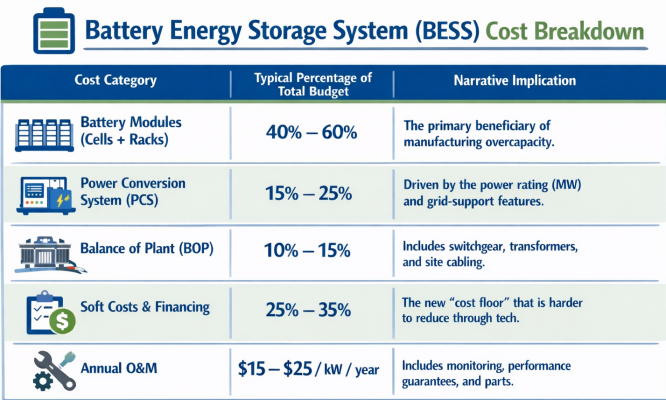
The secondary components—power conversion systems (PCS/inverters), balance of system (civil, mechanical), and controls—are less volatile and have experienced more modest improvements. However, continued standardization and manufacturing scale can yield 5-10% reductions in these components over the coming years, providing additional tailwinds to overall system cost reduction.
The Economics Inflection Point: When BESS Became Viable Beyond 4-Hour Duration
A critical economic threshold has been crossed. For most of the 2020s, BESS competitiveness was limited to 2-4 hour duration applications, where capital costs scaled favorably relative to the energy output. Longer-duration storage (6, 8, or 10 hours) was typically uneconomical on a cost basis, with pumped hydro storage (PSP) or other long-duration technologies remaining the default choice.
This dynamic is fundamentally shifting. Analysis by Envision Energy energy storage specialists demonstrates that with 2025 battery costs, BESS projects can now compete economically at 6-hour duration and approach viability at 8–10-hour duration. More importantly, modeling for 2028 suggests that 10-hour BESS projects will achieve internal rates of return (IRR) comparable to pumped hydro storage. This convergence has profound implications: BESS, with its faster deployment timeline (months versus years for PSP), geographic flexibility, and modular scalability, becomes the preferred technology for most long-duration storage applications going forward.
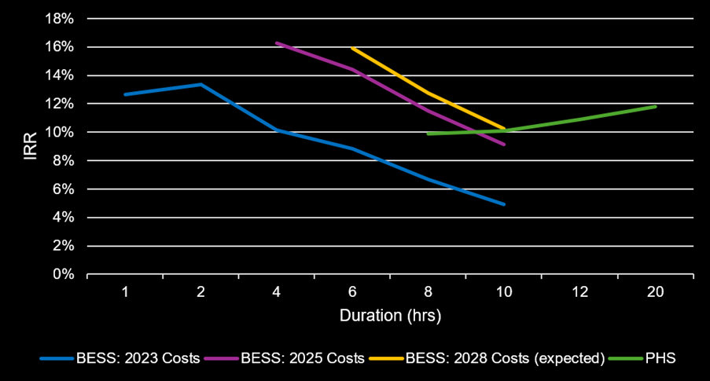
For India, where geographical and hydrological constraints limit pumped hydro deployment, this transition is particularly significant. Round-the-clock (RTC) renewable energy projects, which require 8-12 hours of storage, are becoming increasingly viable as standalone BESS solutions, rather than requiring thermal plant backup or expensive inter-seasonal storage.
Government Support: The Shrinking Necessity
As BESS economics improve, the government's financing role is evolving—not disappearing but transforming. The 2025 Viability Gap Funding (VGF) scheme allocated Rs 5,400 crore ($631 million) to support development of 30 GWh of standalone BESS capacity, with a maximum VGF contribution of Rs 1.8 million per MWh. This represents meaningful support, but notably less intensive than earlier schemes when BESS costs were double or triple today's levels.
Additional policy mechanisms continue to accelerate deployment: inter-state transmission system (ISTS) charge waivers for 12 years (for projects commissioned by June 2028) reduce operating costs and improve project returns; the Production-Linked Incentive (PLI) scheme supports domestic battery manufacturing, with expected supply-chain localization reducing future import-dependent pricing premiums; and harmonized state-level tender frameworks improve predictability and lower bid-bid risk premiums.
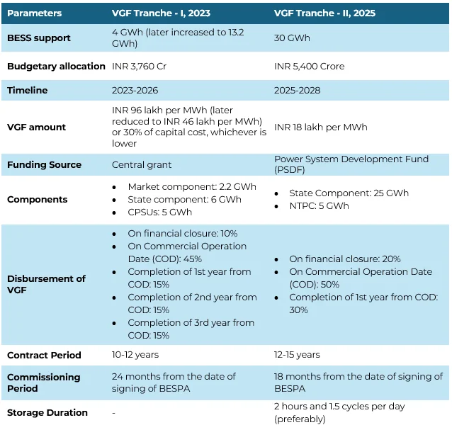
Importantly, as battery costs continue to decline, the case for even basic VGF support weakens. Some tenders in 2025 have been structured with minimal or no VGF requirement, suggesting that purely commercial BESS projects may become increasingly viable without subsidies—a critical milestone for scaling deployment independent of government financing constraints.
Reshaping the Project Economics Paradigm
The impact on project-level returns and payback periods is substantial. A typical industrial BESS installation in India that might have achieved 10-15% IRR with 2023-24 battery costs can now achieve 15-20% IRR with 2025 pricing—a significant improvement for both commercial operators and utility off-takers. Payback periods, typically 8-12 years at historical costs, are compressing, improving the risk-adjusted investment case.
Furthermore, the multiple value streams available to BESS projects have broadened as the technology matures. Beyond energy arbitrage (buying low, selling high), storage operators now capture:
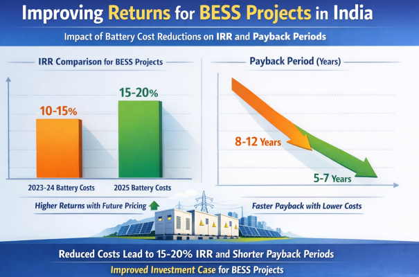
- Capacity payments from avoiding peak power deficits
- Ancillary services (frequency regulation, voltage support, voltage dip management)
- Emergency reserves for grid stability
- Peak shaving and demand charge management for commercial & industrial (C&I) applications
- Renewable firming services for co-located or contracted renewable generation
With falling capex, even partial monetization of these value streams strengthens project returns. A project that in 2022-23 required full-scale value stacking to achieve acceptable returns can now achieve strong returns from energy arbitrage and capacity payments alone—providing greater flexibility and reducing operational complexity.
LFP's Long-Term Dominance and Emerging Chemistries
While LFP will almost certainly remain the cost leader for stationary storage through 2035, the longer-term technology trajectory warrants attention. Sodium-ion batteries, an emerging chemistry using abundant sodium rather than scarce lithium, are advancing rapidly. Researchers have recently demonstrated solid-state sodium batteries with promising thermal stability and conductivity, bringing commercial viability 2-3 years closer. While solid-state sodium batteries remain 3-5 years from commercial deployment at scale, their potential for further cost reductions (sodium is 10x more abundant than lithium) could eventually compete with LFP for ultra-long-duration applications.
Similarly, next-generation LFP variants such as lithium manganese iron phosphate (LMFP) are emerging as performance improvements for scenarios requiring higher energy density within the same cost envelope. These evolutionary improvements will likely sustain cost reductions even as absolute prices stabilize.
The Global Market Transformation: Scale Unlocking Scale
India's experience reflects a global pattern. BloombergNEF projects global energy storage capacity to grow from 27 GW (end of 2021) to 411 GW by 2030—a 15-fold expansion. Within this macro trend, BESS deployment is accelerating faster, with stationary storage expected to reach 236.22 GWh of India's 411.4 GWh storage requirement by 2032.
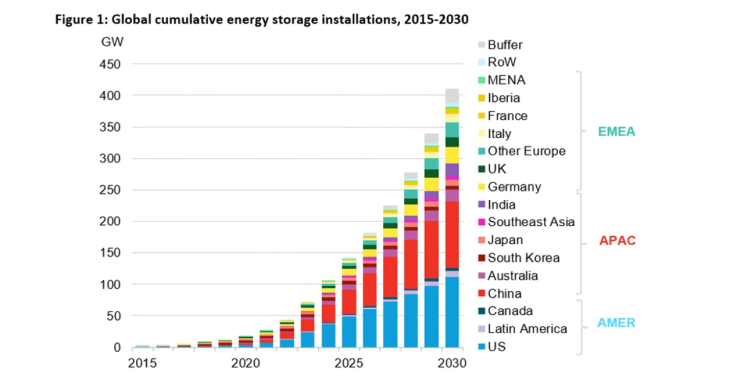
This scale creates positive feedback loops. Increased manufacturing investment builds capacity; excess capacity drives price competition; lower prices unlock new market segments; larger volumes justify further manufacturing investments. This virtuous cycle, driven by declining battery costs, is now powerful enough to sustain rapid deployment independent of continuous subsidy escalation.
Looking Ahead: The New Economics Normal
The BESS sector has crossed a threshold. Falling battery costs—driven by manufacturing overcapacity, LFP adoption, system design optimization, and process efficiency gains—have transformed BESS from a nascent, support-dependent technology into a cornerstone of grid infrastructure economics. The cost trajectory is clear: while the pace of decline will moderate from the spectacular 45% reduction in stationary storage seen in 2024-2025, continued reductions of 3-5% annually are realistic through 2030, sustained by ongoing manufacturing scale, supply chain maturation, and incremental technological improvements.
For project developers, utilities, and policymakers, the implications are clear. BESS deployment decisions should be evaluated on commercial merit increasingly divorced from subsidy assumptions. For India specifically, with 500 GW of renewable capacity targets by 2030, BESS is no longer an optional add-on—it is the essential flexible infrastructure backbone required to operationalize that ambition. Falling battery costs have made this transition not just technically feasible but economically compelling.